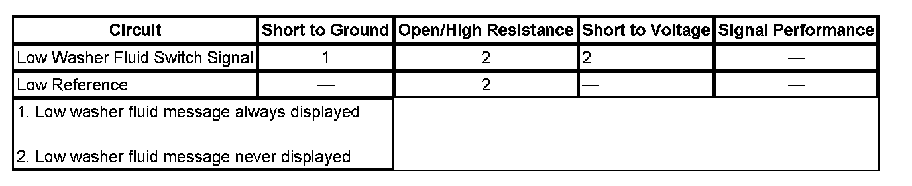

Low Washer Fluid Indicator Malfunction
LOW WASHER FLUID INDICATOR MALFUNCTION
DIAGNOSTIC FAULT INFORMATION

Perform the Diagnostic System Check - Vehicle prior to using this diagnostic procedure. Initial Inspection and Diagnostic Overview
CIRCUIT/SYSTEM DESCRIPTION
The Check Washer Fluid message is controlled by the instrument panel cluster using an input from the washer fluid level switch. The washer fluid level signal circuit is supplied ignition voltage through a resistor then monitored within the instrument cluster. The washer fluid level switch is normally open so the instrument cluster detects ignition voltage on the washer fluid level signal circuit whenever the washer fluid level is not low. When the washer fluid reaches the point where the driver should be informed that the washer fluid is low, the washer fluid level switch closes. When the washer fluid level switch is closed the washer fluid level signal circuit voltage is pulled low, and the instrument panel displays the Check Washer Fluid message on the driver information center. In order to prevent the Check Washer Fluid message from being displayed while sloshing is occurring in the washer fluid container, the instrument cluster is programed with a 1 minute delay before changing states of the Check Washer Fluid message during an ignition cycle.
CIRCUIT/SYSTEM TESTING
1. Ignition OFF, disconnect the harness connector at the washer fluid level switch.
2. Test for less than 1.0 ohm of resistance between the ground circuit terminal A and ground.
- If greater than the specified range, test the ground circuit for an open/high resistance.
3. Ignition ON, verify the scan tool Washer Fluid Level parameter is OK.
- If not the specified value, test the signal circuit terminal B for a short to ground. If the circuit tests normal, replace the IPC.
4. Install a 3-A fused jumper wire between the signal circuit terminal B and ground. Verify the scan tool Washer Fluid Level parameter is Low.
- If not the specified value, test the signal circuit for a short to voltage or an open/high resistance. If the circuit tests normal, replace the IPC.
5. If all circuits test normal, test or replace the washer fluid level switch.
REPAIR INSTRUCTIONS
Perform the Diagnostic Repair Verification after completing the diagnostic procedure.
- Washer Solvent Container Level Sensor Replacement
- Control Module References for IPC replacement, programming, and setup. Verification Tests Programming and Relearning